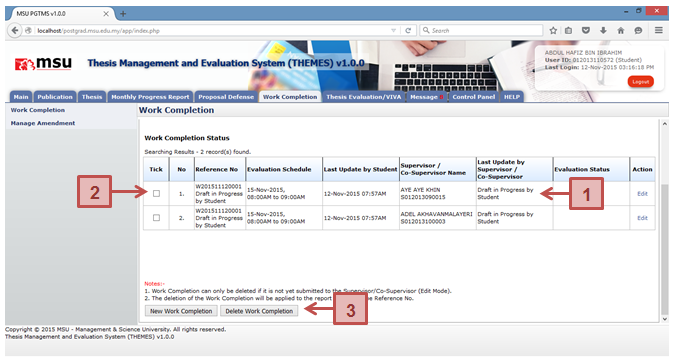

Prerequisite
The Work Completion has been saved for more changes.
Steps
- The Work Completion status must be in Draft in Progress by Student.
- Tick the checkbox for which the Work Completion is going to be deleted.
- Click Delete Work Completion button to delete the Work Completion from the list.
Next Action
Create another New Work Completion.
Warning
System will prompt a notification message if
- No Work Completion has been selected before the deletion.
- The selected Work Completion to be deleted is already submitted to the Supervisor
Note
- Work Completion can only be deleted if it is not yet submitted to the Supervisor/Co-Supervisor (Edit Mode).
- The deletion of the Work Completion will be applied to the one with the same Reference No.
Created with the Personal Edition of HelpNDoc: Free EBook and documentation generator